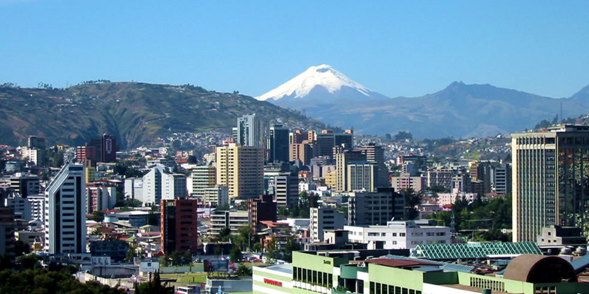
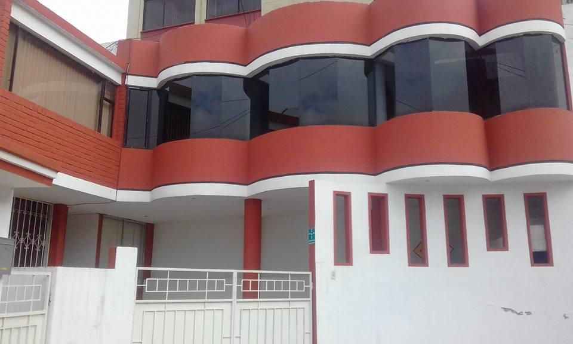
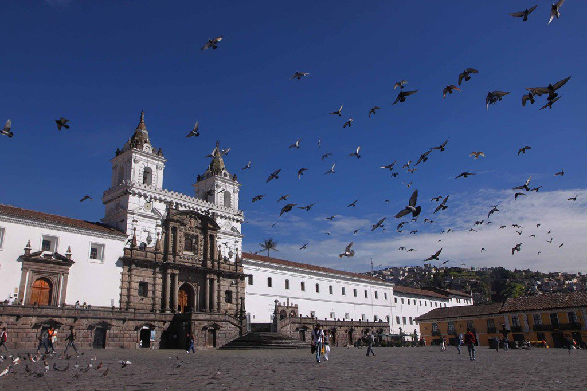
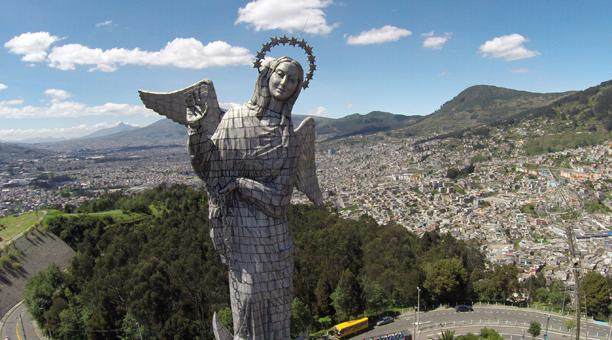

La vida de un Programador
Dicen que los programadores son los nuevos magos del mundo, dicen que pueden convertir ideas en codigo y codigos en realidad, tambien dicen que pueden transformar sueños y hacer de un lienzo una obra sin fronteras, dicen tambien que pueden atravesar las barreras de la era digital hasta que se materializen, incluso, pueden, desafiar al tiempo, aunque aun, no han podido ganarle.

Vivir en Quito
No se puede solo pasar por quito, no se puede solo vacacionar en Quito, no puedes vivir Quito sin que te enamores perdidamente de el, y no por nada le llaman la carita de Dios, esa que todos quieren ver, esa que nadie puede mirar directamente por que quedaria deslumbrado para siempre, iluminado con la belleza de su sol y el calor de sus calles que entre un frio invernal de montaña y valle te siembra una semilla sin igual, Quito, la capital del centro del mundo. El Ecuador en flor desnuda que te llena de una ternura que dificilmente podras borrar de tu existencia, y es que no se puede pasar por Quito sin enamorarse de esta magica tierra.
Viajar a Quito
EL mundo se mueve, la tierra gira a una velocidad increible que solo logramos percibir cuando nos movemos junto a ella, asi es nuestra vida y asi tambien es nuestro sistema de convivencia. Movernos nos mantiene vivos y cuando amamos viajar esto se hace parte de nosotros, cuando amamos viajar no como turistas si no mas bien como exploradores de un planeta que habitamos y nos habita, Si viajar a Quito es enamorarse, entonces vivir en el es pasión pura. Para conocer una tierra hay que habitarla, llenarse de su aroma, sentir a su gente y disfrutar de su sentir. para sentir una tierra hay que habitarla y si eres de los viajeros que ama habitar la tierra que visita debes vivir en Quito. En la capital del Ecuador hay departamentos muy comodos y a muy buenos precios en los que puedes vivir un buen tiempo y disfrutar de esta Magica ciudad.
Invertir en Quito
Cuando llegue a Quito, luego de enamorarme de "La carita de Dios" necesite disfrutar de ella fuera de las paredes de hoteles baratos que me ofrecia la ciudad. Algunas ofertas de alquiler de apartamentos me sorprendieron por sus bajos costos, incluso casas con rentas muy economicas, pero no fue hasta que descubri el Anticresis que realmente me decidi a invertir en mi comodidad. El anticresis es una forma de invertir en tu tiempo y ahorrar dinero, el dueño de un inmueble te ofrece su vivienda por un tiempo determinado a cambio de una suma de dinero convenida como prestamo con la garantia de devolverte la cantidad completa pasado el tiempo determinado, mientras tanto como garantia del dinero, vives en el departamento. La primera vez que escuche de esto me parecio increible y luego de conocer algunos clasificados encontre un apartamento ideal para mi. Situado al centro Norte de Quito con una hermosa vista de las montañas y la ciudad me convenci para estrenar mi nuevo habitat. Justo lo que necesitaba. Ahorrar dinero mientras invertia en mi tiempo y mi comodidad, mi hogar en Quito.
Amistades en Quito
Cuando conoci a Marianita me parecio que era una chica muy hermosa y alegre, muy simpatica y conversadora, yo le hablaba de las estrellas y ella me hablaba de los habitantes de otras galaxias, disfrutaba mucho de sus coladas moradas y la forma en que con un carisma sin igual me relataba aquellas historias de tierras lejanas, seres intergalacticos y demás ocurrencias de culturas que parecian tan lejanas y sin embargo tan cercanas. Nazca, las piramides, los Incas y las tribus originarias del Ecuador tenian mucho en común con sus historias, incluso las estrellas no estaban muy lejos cuando parecia que desde alguna montaña del Ecuador o un monumento natural como el Cotopaxi podias alcanzarlas, tocarlas e incluso soñar en ellas, sus relatos me transportaban a un mundo que podia sentir magico en mi, que se hacia sentir cuando desde su departamento lograba contemplar la luna, las estrellas y el sol en un unico momento que solo desde el centro del mundo se logra percibir. Recuerdo una noche que me conmovio con el cuento de un amigo de otra tierra, que parecia de otro planeta, un habitante del espacio perdido en las orillas de la carita de Dios, en sus mejillas, desde sus ojos, naufragaba este ser que creyo no encontrar retorno a su mundo lejano y sin embargo, tan cercano, como esas montañas, como esas estrellas, como esas historias y esos cuentos de noches y buenas lunas, estaba tan cerca de su hogar, que no lograba mirarlo, sentia tan lejano aquel sentimiento de retorno que no se dio cuenta, que habia retornado a traves del tiempo y sus misterios. Esa noche estaba tan conmovido que Me senti alli, en los ojos de aquel ser ancestral.

El departamento de Mariana
El departamento de Mariana es un espacio de visiones, naturaleza viva y emociones, se puede contemplar el Cotopaxi vestido de nieve y al mismo tiempo la ciudad y sus rincones. Es un lugar para disfrutar de Quito, de su cultura, eventos y tradiciones. Esta situado en el Centro Norte de la Mágica Ciudad, en una zona muy comoda y residencial, es ideal para dos o tres personas y tiene ademas de la buena vista, una fachada hermosisima. Mariana ofrece su apartamento en Anticresis para todo aquel viajero que quiera establecerce en Quito por dos años o más, el monto, perfecto, solo diez mil dólares que seran devueltos al completarse los dos años de habitat, es una perfecta inversión para disfrutar realmente del Ecuador y venir a vivir en el centro del mundo. Si te decides contactame por correo y podrás venir a vivir en el corazón de Latino América, Ecuador, el centro del mundo. (+593) 0999297531

Trabajar en Quito
Trabajar en Quito no sera dificil si cuentas con una visa de trabajo. Es un pais en desarrollo y esta creciendo muy rapido, es cuna de nuevas tecnologias, numerosas construcciones residenciales y comerciales además de multiples vias de transporte en crecimiento, Quito también es capital Cultural y Turistica del Ecuador, es perfecto para emprender, nuevas ideas y emprendimientos son bien recibidos y escalan muy rapidamente desde el centro del mundo. Si buscas un lugar ideal en América Latina para emprender, trabajar, vivir y disfrutar, Quito es el lugar perfecto para ti. Empresarios, emprendedores, estudiantes, programadores y profesionales en todas las areas ya hicieron de Quito su hogar. (+593) 0999297531

Emprender en Quito
Para emprender en quito es importante contar con los documentos necesarios y todos los procesos legales. Existen multiples opciones de visado en El Ecuador, entre ellas: